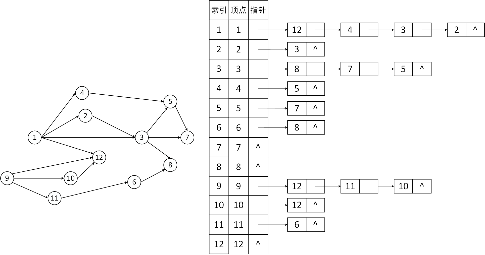
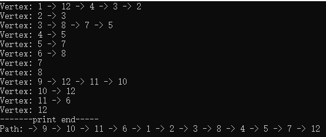

1.概念
1.1 有向无环图（DAG）
若一个有向图中不存在环，则称为有向无环图，简称（DAG）
1.2 AOV网
- 顶点代表活动，有向边<Vi, Vj>表示活动Vi必须先于Vj进行；
- AOV网一定是DAG图，不能有环
1.3 拓扑排序
仅当满足下列条件时，称为改图的一个拓扑排序
- 每个顶点出现且仅出现一次
- 若顶点A在序列中排在顶点B的前面，则在图中不存在从顶点B到顶点A的路径
拓扑排序是对有向无环图的顶点的一种排序，它使得若存在一条从顶点A到顶点B的路径，则在排序中顶点B出现在顶点A的后面。
步骤（BFS）
- 从AOV网中选择一个没有前驱（入度为0）的顶点并输出；
- 从网中删除该顶点和所有以它为起点的有向边
- 重复 1 和 2 直到当前的AOV网为空或当前网中不存在无前驱的顶点为止
1.4 逆拓扑排序（DFS）
- 从AOV网中选择一个没有后继（出度为0）的顶点并输出
- 从网中删除该顶点和所有以它为终点的有向边
- 重复 1 和 2 直到当前的AOV网为空
1.5 拓扑排序性质
- 拓扑排序、逆拓扑排序序列可能不唯一
- 若图中有环，则不存在拓扑排序序列/逆拓扑排序序列
2.描述
设计算法对一个有向图使用DFS进行拓扑排序。
3.分析
DFS可以搜环，拓扑排序(BFS)也能解决环的问题。
强调：DFS进行拓扑排序,题目默认应用场景是可以用DFS进行拓扑。拓扑排序过程中遇到环。强掉存在环的问题,你在单独考虑。
4.算法思想
拓扑排序DFS和BFS得到的序列并不唯一。DFS只要将递归退出的顶点压入到栈中保存就不会错。
DFS拓扑排序
- 从任意一个顶点开始DFS搜索，当遇到出度为0的顶点要返回时，标记此顶点，并将此顶点压入栈中；
- 重复上述不步骤，直至DFS访问完图中所有顶点，同时将顶点压入栈中；
- 将栈中的元素弹出，即可得到与BFS拓扑排序一样的序列。
BFS拓扑排序
- 取图中，入度为0的顶点压入栈中；
- 取出栈顶元素，并将它的邻居顶点入度减一，若邻居顶点减一后入度为0，压入栈中；
- 重复上述步骤，直至栈中无元素。
5.手算示例

DFS拓扑排序手算
如上图，从顶点1号开始DFS搜索，每换一行代表回退一次，绿色表示找到出度为0的顶点，红色表示此顶点已被标记
| 1 | 12 | |||||||
| 4 | 5 | 7 | ||||||
| 5 | ||||||||
| 4 | ||||||||
| 3 | 8 | |||||||
| 7 | ||||||||
| 5 | ||||||||
| 3 | ||||||||
| 2 | 3 | |||||||
| 2 | ||||||||
| 1 | ||||||||
| 9 | 12 | |||||||
| 11 | 6 | 8 | ||||||
| 11 | 6 | |||||||
| 11 | ||||||||
| 10 | 12 | |||||||
| 10 | ||||||||
| 9 |
DFS拓扑排序序列
| 12 | 7 | 5 | 4 | 8 | 3 | 2 | 1 | 6 | 11 | 10 | 9 |
如果将DFS递归退出时候输出的顶点保存到栈中，最后将将栈中的顶点输出，就能获得跟BFS拓扑排序一样的序列。
BFS拓扑排序
BFS拓扑排序（栈）：序列的逆置
栈： —> （栈顶），每换行一次，栈操作一次（压栈，出栈）
| 1 | 9 | ||||||||||
| 1 | 11 | 10 | |||||||||
| 1 | 11 | ||||||||||
| 1 | 6 | ||||||||||
| 1 | |||||||||||
| 12 | 4 | 2 | |||||||||
| 12 | 4 | 3 | |||||||||
| 12 | 4 | 8 | |||||||||
| 12 | 4 | ||||||||||
| 12 | 5 | ||||||||||
| 12 | 7 | ||||||||||
| 12 | |||||||||||
BFS拓扑排序序列：
| 9 | 10 | 11 | 6 | 1 | 2 | 3 |
6.代码
全局变量
// 访问标记数组，防止顶点重复出现在路径中 bool visited[MAX_VERTEX] = { false }; VertexType stack[MAX_VERTEX] = { 0 }; // 保存DFS退出时的顶点序列 int stackLength = 0; // 数组长度
核心代码
/** * 使用DFS获得从某一顶点开始遍历，并将退回顶点存入数组 * * @param alG - 邻接表存储的图 * @param vertex - 起始顶点 * * @return @c bool */ void DFS(ALGraph alG, VertexType vertex) { visited[vertex] = true; ArcNode* pNextArcNode = alG.vertices[vertex].first; int neighborVertex = 0; while (pNextArcNode != NULL) { neighborVertex = pNextArcNode->adjvex; if (!visited[neighborVertex]) DFS(alG, neighborVertex); pNextArcNode = pNextArcNode->next; } // 顶点vertex推出递归时，加入到顶点序列中 stack[stackLength++] = vertex; } /** * 使用DFS拓扑排序 * * @param alG - 邻接表存储的图 * * @return @c void */ void getTopologicSort(ALGraph alG) { // 从0开始深度优先遍历 for (int v = 1; v <= alG.vexnum; v++) { if (!visited[v]) DFS(alG, v); } printVertex(stack, stackLength); }
打印栈中数据函数
注意栈的输出顺序
void printVertex(VertexType stack[], int stackLength) { printf("Path: "); for (int i = stackLength - 1; i >= 0; i--) { printf("-> %d ", stack[i]); } printf("\n"); }
7.运行
注意：图的类型为有向不带权图
数据准备
顶点数据：
vSet.txt1 2 3 4 5 6 7 8 9 10 11 12
弧数据：
arcSet.txt1 2 1 3 1 4 1 12 2 3 3 5 3 7 3 8 4 5 5 7 6 8 9 10 9 11 9 12 10 12 11 6
读取顶点信息
读取弧信息
创建图
调用DFS拓扑排序
getTopologicSort(alG);
运行结果
